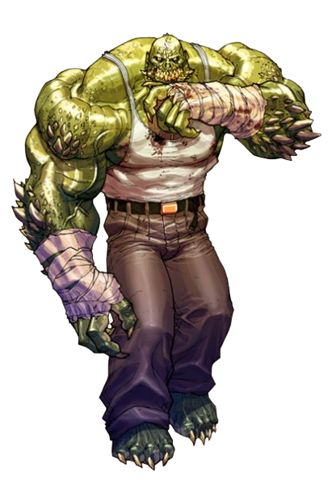

Informações do Crocodilo
Voltar
Equipes DC

Criação do Crocodilo
O Crocodilo é um personagem dos quadrinhos da DC Comics, conhecido por sua
aparência monstruosa e sua
natureza predatória. Ele foi criado por
Gerry Conway e Gene Colan, fazendo sua primeira
aparição em "Batman
#357" em 1983.
O Personagem Crocodilo
O Crocodilo, cujo nome verdadeiro é Waylon Jones, é um mutante humano que sofre de
uma condição chamada
"Síndrome de Regressão Reptiliana". Isso o transformou
em uma criatura com características de crocodilo,
incluindo uma pele escamosa,
força sobre-humana e uma mandíbula poderosa. Devido à sua aparência e natureza
predatória, ele é muitas vezes retratado como um vilão em confronto com o Batman e outros heróis.
Waylon Jones teve uma infância difícil devido ao seu aspecto diferente, o que o levou a uma vida de
marginalização e abuso. Essas experiências moldaram sua personalidade e o transformaram em um ser amargurado
e violento.
Quadrinhos Importantes do Crocodilo
O Crocodilo teve várias histórias importantes nos quadrinhos da DC Comics, explorando sua origem, suas
batalhas contra heróis e suas conexões com outros vilões. Aqui estão alguns dos quadrinhos mais relevantes
do personagem:
"Batman: Asilo Arkham" (1989):
Esta graphic novel apresenta uma história sombria e atmosférica em que o Crocodilo é um dos vilões
internados no Asilo Arkham, o hospital psiquiátrico para criminosos insanos de Gotham City.
"Batman: Silêncio" (2002-2003):
O Crocodilo desempenha um papel significativo nesta saga, onde ele é recrutado por um vilão misterioso para
enfrentar o Batman.
"Esquadrão Suicida Vol. 1: Kicked in the Teeth" (2011):
O Crocodilo se torna um membro do Esquadrão Suicida, uma equipe de anti-heróis encarregada de missões
perigosas em troca de redução de suas penas.
Adaptações em Outras Mídias
O Crocodilo também teve aparições em outras mídias, incluindo filmes, séries de TV e jogos. Aqui estão
algumas das adaptações notáveis do personagem:
Filme "Esquadrão Suicida" (2016):
O Crocodilo é um dos membros do Esquadrão Suicida neste filme, retratado como um ser monstruoso e poderoso
que enfrenta desafios ao lado de outros vilões.
Série de TV "Gotham" (2014-2019):
O personagem Killer Croc (apelido do Crocodilo) aparece nesta série, mostrando sua transformação gradual em
uma criatura mais reptiliana.
Habilidades do Crocodilo
O Crocodilo possui uma série de habilidades únicas, derivadas de sua condição mutante e de sua aparência
semelhante a um crocodilo. Aqui estão algumas de suas principais habilidades:
Força e Resistência Sobrehumanas:
O Crocodilo possui uma força e resistência sobre-humanas, permitindo-lhe enfrentar adversários poderosos e
suportar danos físicos significativos.
Regeneração Celular:
Ele tem a capacidade de regenerar rapidamente células danificadas, o que o torna mais difícil de ser
derrotado em batalha.
Garras e Dentes Afiados:
Suas garras e dentes são afiados e letais, capazes de causar danos graves a seus oponentes.
Nado e Adaptabilidade Aquática:
Como uma criatura semelhante a um crocodilo, ele é um nadador habilidoso e pode se adaptar facilmente ao
ambiente aquático.
Conclusão
O Crocodilo é um vilão icônico dos quadrinhos da DC Comics, conhecido por sua aparência monstruosa e
habilidades sobre-humanas. Sua história de origem trágica e sua natureza predatória o tornam um personagem
fascinante e complexo. Com aparições em quadrinhos, filmes, séries de TV e jogos, o Crocodilo continua a ser
uma presença marcante no universo da DC. Suas habilidades sobrehumanas, incluindo sua força, resistência e
regeneração celular, o tornam um adversário formidável para os heróis de Gotham City.